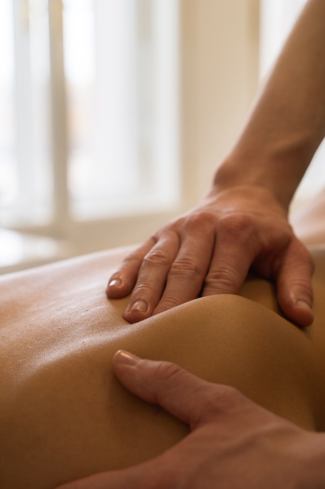
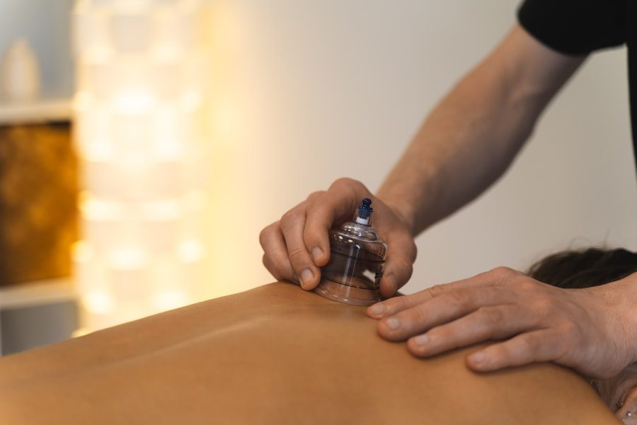
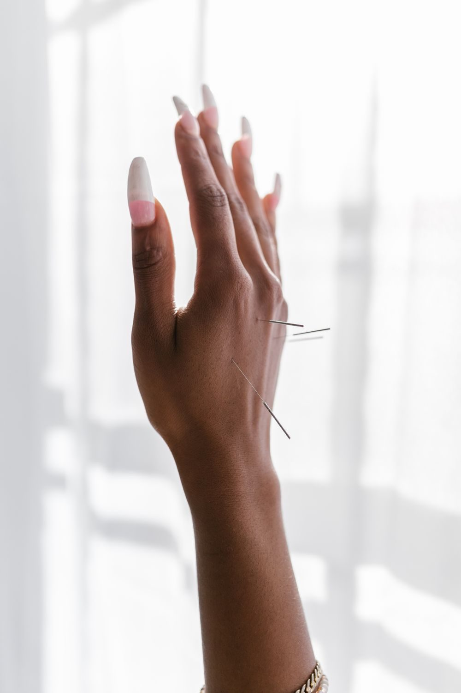
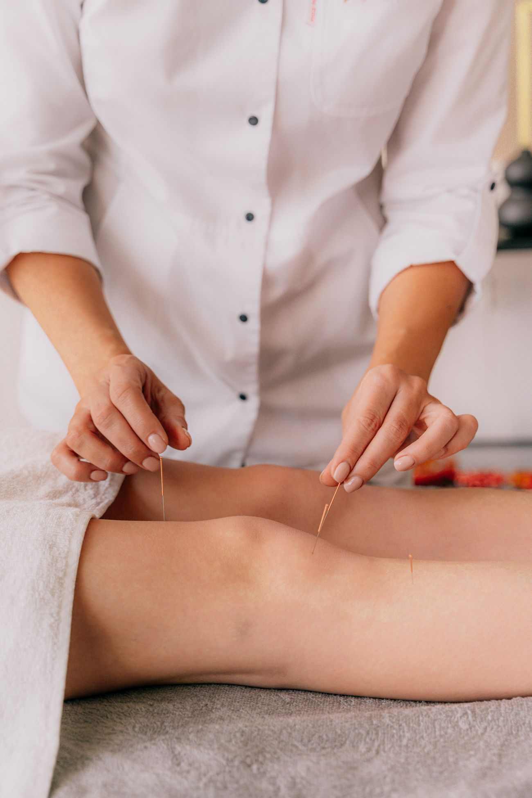

Acupuncture 针灸
Fine needles at specific points to move stagnant circulation and calm an overactive system.
30–45 min
Typical session
Needles stay in 20 min
Needles stay in 20 min
Acupuncture, herbal medicine and physiotherapy in Solaris Dutamas — for people who would rather understand their body than silence it.
See our treatments
Registered traditional & complementary practitioners
(How we work)

2 Disciplines under one roof
6 Treatments to draw from
(Treatments)
Fine needles at specific points to move stagnant circulation and calm an overactive system.
Our raw herbs are sourced from Taiwan and arrive batch-tested for heavy metals and pesticide residue.

Deep, structured Chinese bodywork for necks, shoulders and lower backs that have stopped letting go.

Suction that draws blood to the surface and releases the tight fascia underneath. Yes, it leaves marks.

Hands-on rehab and loading work for sports injuries, sprains and postpartum recovery.
Support for menstrual pain, irregular cycles, uterine circulation and the months after birth.
Why we ask so many questions
治病求本
A symptom is where the body speaks. It is rarely where the trouble began. A first visit takes an hour because your physician will ask about your sleep, your appetite and your stress before deciding what to treat — in Chinese medicine those are not side notes, they are the case.
Pulse · Tongue · History · Conversation

Acupuncture, cupping and tui na work on one system from different angles. Circulation opens, held tension lets go, and the nervous system settles enough for the body to do its own repair.
(Your first visit)
Every consultation starts the same way — pulse, tongue, history, and a proper conversation. Nothing is rushed and nothing is decided before we have heard the whole picture.
Your physician reads the pulse at both wrists and looks at the tongue, then works back from the symptom to what is driving it. Most people are seen by both a TCM physician and a physiotherapist.
What follows depends entirely on what we find. Treatment may combine needles, bodywork, cupping or a herbal formula, and it gets adjusted as your case changes rather than run to a fixed script.

A first visit takes an hour, and nobody is rushed back out the door.
TCM and physiotherapy in the same clinic, so nothing gets treated in isolation.
Taiwan-sourced and batch-tested for heavy metals and pesticide residue.

(What we see most)
Necks, shoulders and lower backs that loosen for a day and then tighten again. Sports injuries, sprains and strains that have stalled.
Acupuncture · Tui na · Cupping · PhysiotherapyMenstrual pain, irregular cycles, and the long months of postpartum recovery when everything feels borrowed.
Women's health · Herbal medicine · PhysiotherapyPoor sleep, low energy, appetite that has changed, a body that has been carrying stress for long enough to show it.
Acupuncture · Herbal medicineOne appointment, one hour, and a clear answer about whether we can help. If we are not the right people for your case we will say so.
Walk-ins welcome when we have a room free
RM 120/ first visit
Follow-up sessions from RM 90
Book a first consultationIndicative pricing for this concept — to be confirmed with the clinic.
(Questions)
Not in the way people expect. The needles are about the width of a hair — most people feel a dull heaviness around the point rather than a sharp prick, and a lot of them fall asleep on the table.
No. You can book directly. Bring any recent scans or blood work if you have them — they help, though they are not required.
It depends entirely on the case, and you will be given a rough number after the first visit rather than being signed up to a package. Something acute may take two or three sessions; something you have carried for years takes longer.
Yes, and you should tell us what you are already taking so your physician can account for it. We are not a replacement for the care you are already under.
We are on the ground floor at Solaris Dutamas, a short walk from Publika. Bring any recent scans or blood work if you have them — they help, though they are not required.